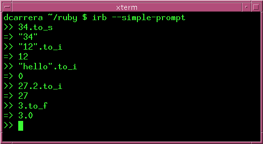

Ruby uses special names for things that we already know. For instance, it uses the word Float to mean "decimals". Here are more definitions:
Object: That's just any piece of data. Like the number 3 or the string 'hello'.
Class: Ruby separates everything into classes. Like integers, floats and strings.
Method: These are the things that you can do with an object. For example, you can add integers together, so + is a method.
You've already seen thee classes for things that you already know:
| Old name | Ruby class |
|---|---|
| integer | Integer |
| decimals | Float |
| text | String |
You have also seen several methods:
| Class | Some methods |
|---|---|
| Integer | + - / * % ** |
| Float | + - / * % ** |
| String | capitalize, reverse, length, upcase |
Make sure you understand the difference between classes and objects. An object is a unit of data. A class is what kind of data it is.
For example, 3 and 5 are different numbers. They are not the same object. But they are both integers, so they belong to the same class. Here are more examples:
| Object | Class |
|---|---|
| 2 | Integer |
| -5 | Integer |
| 7.2 | Float |
| 3.14 | Float |
| 'hello' | String |
| 'world' | String |
Remember, different classes have different methods. Here are some differences that you have already seen.
For this reason, we will use the notation Class#method to state exactly which method we mean. For instance, I will say Integer#+ to differentiate it from Float#+ and String#+. I can also say that String#upcase exists, but Integer#upcase does not exist.
Ruby has some methods for converting between classess:
| Method | Converts | |
|---|---|---|
| From | To | |
| String#to_i | string | integer |
| String#to_f | string | float |
| Float#to_i | float | integer |
| Float#to_s | float | string |
| Integer#to_f | integer | float |
| Integer#to_s | integer | string |
Examples:
Ruby can tell you what class an object is. Type these in irb:
12.is_a?(Integer) 12.is_a?(Float) 12.is_a?(String) '12'.is_a?(Integer) '12'.is_a?(Float) '12'.is_a?(String) 12.0.is_a?(Integer) 12.0.is_a?(Float) 12.0.is_a?(String)
What differences do you see?
Type these in:
12 + 12 '12' + '12' '12'.to_i + 12 '12' + 12.to_s 12 * 12 '12' * 12
Did you get the results you expected?
How would you explain the difference between 12, '12' and 12.0 to a younger sibbling?